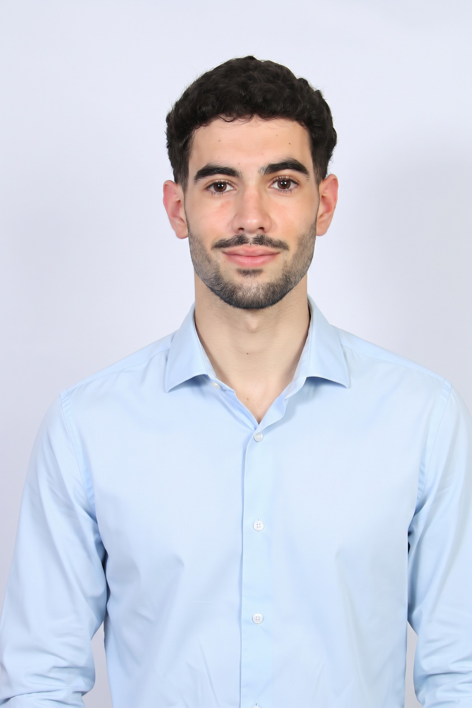

DAVID VILLAREJO
Estudiante de Ingeniería de Telecomunicaciones (Telemática) en la UC3M enfocado en redes, protocolos, ciberseguridad e inteligencia artificial. Apasionado por cómo los datos viajan de forma segura y por la gestión técnica de proyectos.
foto.jpg

Perfil técnico y pasión por las redes seguras
Estudiante de Ingeniería de Telecomunicaciones (Telemática) en la Universidad Carlos III de Madrid (UC3M), con especial foco en la seguridad de redes y el modo en que los datos viajan de forma fiable y protegida.
Me apasiona el aprendizaje continuo en inteligencia artificial y tecnologías emergentes, combinando mi base técnica con la organización y liderazgo de equipos. Actualmente busco oportunidades profesionales donde aportar valor y seguir creciendo.
Áreas de interés
Educación
Ingeniería Telemática · UC3M (2022 – Actualidad)
Ubicación
Madrid, España
Idiomas
Español (Nativo) · Inglés (C1)
Asociación
STAR UC3M · Project Manager
Trayectoria profesional y formación
Proyectos destacados
Proyectos aplicados en ciberseguridad, diseño de software y sistemas embebidos STM32. Pulsa en "Ver detalles" para explorar cada uno.
Stack técnico y competencias
¿Hablamos?
Si buscas un perfil para prácticas, proyectos de redes y ciberseguridad o gestión técnica, estaré encantado de conectar contigo.